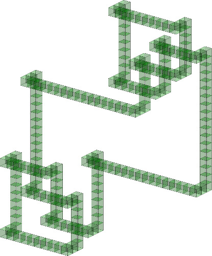
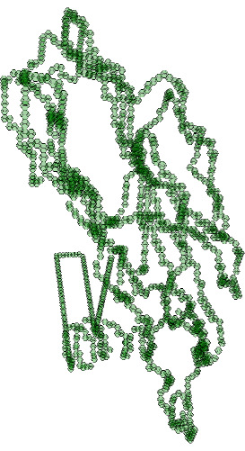
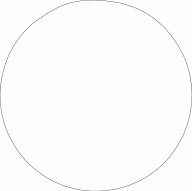
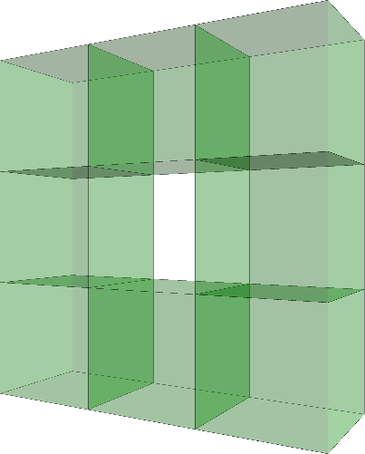
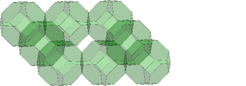
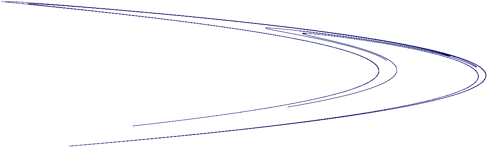

A finite simplicial complex can be defined to be a CW-subcomplex of the canonical regular CW-structure on a simplex \(\Delta^n\) of some dimension \(n\). Analogously, a finite cubical complex is a CW-subcomplex of the regular CW-structure on a cube \([0,1]^n\) of some dimension \(n\). Equivalently, but more conveniently, we can replace the unit interval \([0,1]\) by an interval \([0,k]\) with CW-structure involving \(2k+1\) cells, namely one \(0\)-cell for each integer \(0\le j\le k\) and one \(1\)-cell for each open interval \((j,j+1)\) for \(0\le j\le k-1\). A finite cuical complex \(M\) is a CW-subcompex \(M\subset [0,k_1]\times [0,k_2]\times \cdots [0,k_n]\) of a direct product of intervals, the direct product having the usual direct product CW-structure. The equivalence of these two definitions follows from the Gray code embedding of a mesh into a hypercube. We say that the cubical complex has ambient dimension \(n\). A cubical complex \(M\) of ambient dimension \(n\) is said to be pure if each cell lies in the boundary of an \(n\)-cell. In other words, \(M\) is pure if it is a union of unit \(n\)-cubes in \(\mathbb R^n\), each unit cube having vertices with integer coordinates.
HAP has a datatype for finite cubical complexes, and a slightly different datatype for pure cubical complexes.
The following example constructs the granny knot (the sum of a trefoil knot with its reflection) as a \(3\)-dimensional pure cubical complex, and then displays it.
gap> K:=PureCubicalKnot(3,1); prime knot 1 with 3 crossings gap> L:=ReflectedCubicalKnot(K); Reflected( prime knot 1 with 3 crossings ) gap> M:=KnotSum(K,L); prime knot 1 with 3 crossings + Reflected( prime knot 1 with 3 crossings ) gap> Display(M);

Next we construct the complement \(Y=D^3\setminus \mathring{M}\) of the interior of the pure cubical complex \(M\). Here \(D^3\) is a rectangular region with \(M \subset \mathring{D^3}\). This pure cubical complex \(Y\) is a union of \(5891\) unit \(3\)-cubes. We contract \(Y\) to get a homotopy equivalent pure cubical complex \(YY\) consisting of the union of just \(775\) unit \(3\)-cubes. Then we convert \(YY\) to a regular CW-complex \(W\) involving \(11939\) cells. We contract \(W\) to obtain a homotopy equivalent regular CW-complex \(WW\) involving \(5993\) cells. Finally we compute the fundamental group of the complement of the granny knot, and use the presentation of this group to establish that the Alexander polynomial \(P(x)\) of the granny is
\(P(x) = x^4-2x^3+3x^2-2x+1 \ .\)
gap> Y:=PureComplexComplement(M); Pure cubical complex of dimension 3. gap> Size(Y); 5891 gap> YY:=ZigZagContractedComplex(Y); Pure cubical complex of dimension 3. gap> Size(YY); 775 gap> W:=RegularCWComplex(YY); Regular CW-complex of dimension 3 gap> Size(W); 11939 gap> WW:=ContractedComplex(W); Regular CW-complex of dimension 2 gap> Size(WW); 5993 gap> G:=FundamentalGroup(WW); <fp group of size infinity on the generators [ f1, f2, f3 ]> gap> AlexanderPolynomial(G); x_1^4-2*x_1^3+3*x_1^2-2*x_1+1
A finite pure cubical complex is a union of finitely many cubes in a tessellation of \(\mathbb R^n\) by unit cubes. One can also tessellate \(\mathbb R^n\) by permutahedra, and we define a finite \(n\)-dimensional pure permutahedral complex to be a union of finitely many permutahdra from such a tessellation. There are two features of pure permutahedral complexes that are particularly useful in some situations:
Pure permutahedral complexes are topological manifolds with boundary.
The method used for finding a smaller pure cubical complex \(M'\) homotopy equivalent to a given pure cubical complex \(M\) retains the homeomorphism type, and not just the homotopy type, of the space \(M\).
To illustrate these features the following example begins by reading in a protein backbone from the online Protein Database, and storing it as a pure cubical complex \(K\). The ends of the protein have been joined, and the homology \(H_i(K,\mathbb Z)=\mathbb Z\), \(i=0,1\) is seen to be that of a circle. We can thus regard the protein as a knot \(K\subset \mathbb R^3\). The protein is visualized as a pure permutahedral complex.
gap> file:=HapFile("data1V2X.pdb");; gap> K:=ReadPDBfileAsPurePermutahedralComplex("file"); Pure permutahedral complex of dimension 3. gap> Homology(K,0); [ 0 ] gap> Homology(K,1); [ 0 ] Display(K);

An alternative method for seeing that the pure permutahedral complex \(K\) has the homotopy type of a circle is to note that it is covered by open permutahedra (small open neighbourhoods of the closed \(3\)-dimensional permutahedral titles) and to form the nerve \(N=Nerve({\mathcal U})\) of this open covering \(\mathcal U\). The nerve \(N\) has the same homotopy type as \(K\). The following commands establish that \(N\) is a \(1\)-dimensional simplicial complex and display \(N\) as a circular graph.
gap> N:=Nerve(K); Simplicial complex of dimension 1. gap> Display(GraphOfSimplicialComplex(N));

The boundary of the pure permutahedral complex \(K\) is a \(2\)-dimensional CW-complex \(B\) homeomorphic to a torus. We next use the advantageous features of pure permutahedral complexes to compute the homomorphism
\(\phi\colon \pi_1(B) \rightarrow \pi_1(\mathbb R^3\setminus \mathring{K}), a \mapsto yx^{-3}y^2x^{-2}yxy^{-1}, b\mapsto yx^{-1}y^{-1}x^2y^{-1}\)
where
\(\pi_1(B)=< a,b\, :\, aba^{-1}b^{-1}=1>\),
\(\pi_1(\mathbb R^3\setminus \mathring{K}) \cong < x,y\, :\, y^2x^{-2}yxy^{-1}=1, yx^{-2}y^{-1}x(xy^{-1})^2=1>\).
gap> Y:=PureComplexComplement(K); Pure permutahedral complex of dimension 3. gap> Size(Y); 418922 gap> YY:=ZigZagContractedComplex(Y); Pure permutahedral complex of dimension 3. gap> Size(YY); 3438 gap> W:=RegularCWComplex(YY); Regular CW-complex of dimension 3 gap> f:=BoundaryMap(W); Map of regular CW-complexes gap> CriticalCells(Source(f)); [ [ 2, 1 ], [ 2, 261 ], [ 1, 1043 ], [ 1, 1626 ], [ 0, 2892 ], [ 0, 24715 ] ] gap> F:=FundamentalGroup(f,2892); [ f1, f2 ] -> [ f2*f1^-3*f2^2*f1^-2*f2*f1*f2^-1, f2*f1^-1*f2^-1*f1^2*f2^-1 ] gap> G:=Target(F); <fp group on the generators [ f1, f2 ]> gap> RelatorsOfFpGroup(G); [ f2^2*f1^-2*f2*f1*f2^-1, f2*f1^-2*f2^-1*f1*(f1*f2^-1)^2 ]
An \(n\)-dimensional pure cubical or permutahedral complex can be created from an \(n\)-dimensional array of 0s and 1s. The following example creates and displays two \(3\)-dimensional complexes.
gap> A:=[[[0,0,0],[0,0,0],[0,0,0]], > [[1,1,1],[1,0,1],[1,1,1]], > [[0,0,0],[0,0,0],[0,0,0]]];; gap> M:=PureCubicalComplex(A); Pure cubical complex of dimension 3. gap> P:=PurePermutahedralComplex(A); Pure permutahedral complex of dimension 3. gap> Display(M); gap> Display(P);
 
Pure cubical complexes can be useful for rigourous interval arithmetic calculations in numerical analysis. They can also be useful for trying to estimate approximations of certain numerical quantities. To illustrate the latter we consider the Henon map
\(f\colon \mathbb R^2 \rightarrow \mathbb R^2, \left( \begin{array}{cc} x\\ y \end{array}\right) \mapsto \left( \begin{array}{cc} y+1-ax^2\\ bx \\ \end{array}\right) .\)
Starting with \((x_0,y_0)=(0,0)\) and iterating \((x_{n+1},y_{n+1}) = f(x_n,y_n)\) with the parameter values \(a=1.4\), \(b=0.3\) one obtains a sequence of points which is known to be dense in the so called strange attractor \({\cal A}\) of the Henon map. The first \(10\) million points in this sequence are plotted in the following example, with arithmetic performed to 100 decimal places of accuracy. The sequence is stored as a \(2\)-dimensional pure cubical complex where each \(2\)-cell is square of side equal to \(\epsilon =1/500\).
gap> M:=HenonOrbit([0,0],14/10,3/10,10^7,500,100); Pure cubical complex of dimension 2. gap> Size(M); 10287 gap> Display(M);

Repeating the computation but with squares of side \(\epsilon =1/1000\)
gap> M:=HenonOrbit([0,0],14/10,3/10,10^7,1000,100); gap> Size(M); 24949
we obtain the heuristic estimate
\(\delta \simeq \frac{ \log{ 24949}- \log{ 10287}} {\log{2}} = 1.277 \)
for the box-counting dimension of the attractor \(\cal A\).
generated by GAPDoc2HTML